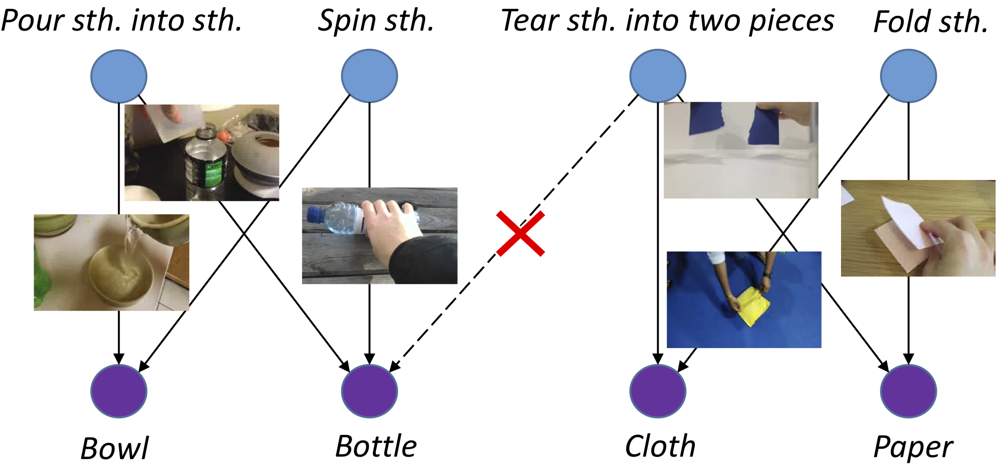
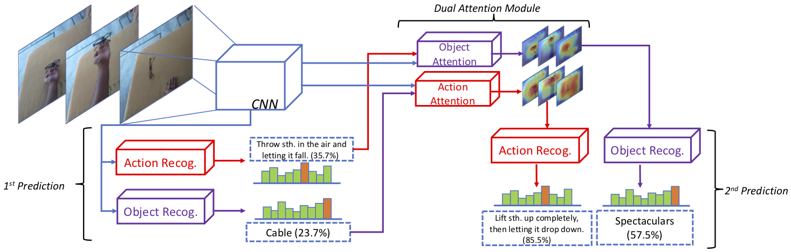
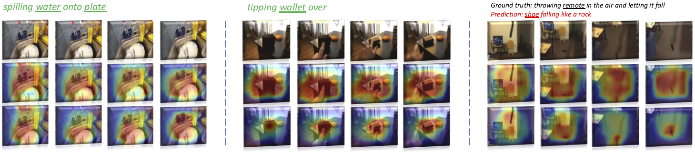
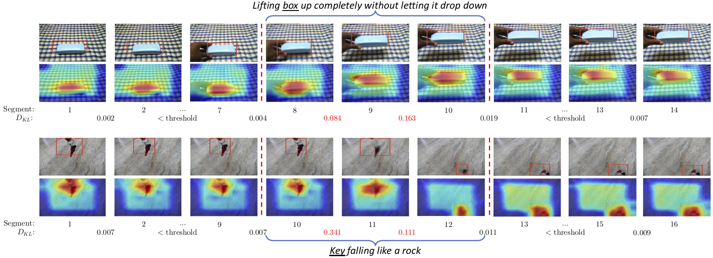
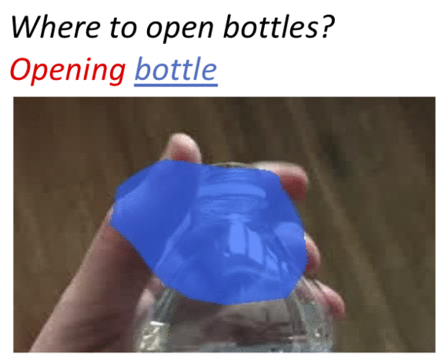
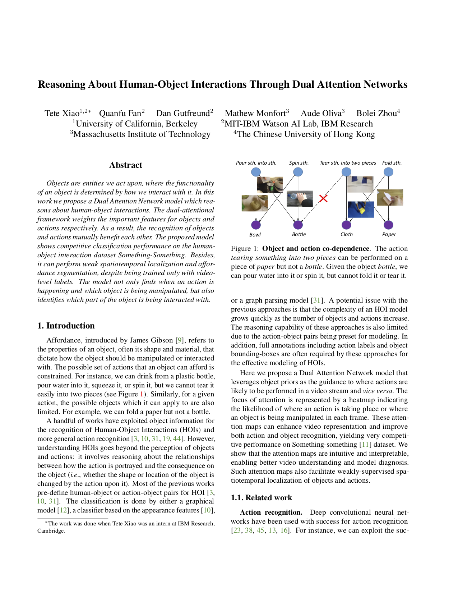

| Reasoning About Human-Object Interactions Through Dual Attention Networks |

Objects are entities we act upon, where the functionality of an object is determined by how we interact with it. In this work we propose a Dual Attention Network model which reasons about human-object interactions. The dual-attentional framework weights the important features for objects and actions respectively. As a result, the recognition of objects and actions mutually benefit each other. The proposed model shows competitive classification performance on the human-object interaction dataset Something-Something. Besides, it can perform weak spatiotemporal localization and affordance segmentation, despite being trained only with video-level labels. The model not only finds when an action is happening and which object is being manipulated, but also identifies which part of the object is being interacted with.
Our approach exploits the role of human action and object in human-object interactions via the dual attention module. The Dual Attention Network first predicts plausible action and object labels independently as the priors (1st prediction). Then the priors are used to generate attention maps that weight the features of object and action for the 2nd prediction.

Attention maps yielded by the Dual Attention Network with their predicted labels above. The first row is the input frames while the second and third ones are attention maps for recognizing action and object respectively. The model accurately learns the alignment between actions and objects, even when the background is complicated.

Visualization of weakly-supervised spatial and temporal localization. Our method find the object being manipulated, as well as the segments in which the action actually happens, despite that it is trained only with video-level labels.

Object-affordance segmentation. The model trained with video-level annotations can automatically find object parts associated with possible ongoing actions.

|  | Tete Xiao, Quanfu Fan, Dan Gutfreund, Mathew Monfort, Aude Oliva, Bolei Zhou. Reasoning About Human-Object Interactions Through Dual Attention Networks published at 2019 International Conference on Computer Vision [arXiv] |
This work was supported by the MIT-IBM Watson AI Lab, as well as the Intelligence Advanced Research Projects Activity (IARPA) via Department of Interior/ Interior Business Center (DOI/IBC) contract number D17PC00341. The U.S. Government is authorized to reproduce and distribute reprints for Governmental purposes notwithstanding any copyright annotation thereon. Disclaimer: The views and conclusions contained herein are those of the authors and should not be interpreted as necessarily representing the official policies or endorsements, either expressed or implied, of IARPA, DOI/IBC, or the U.S. Government.
Please contact Tete Xiao if you have question.